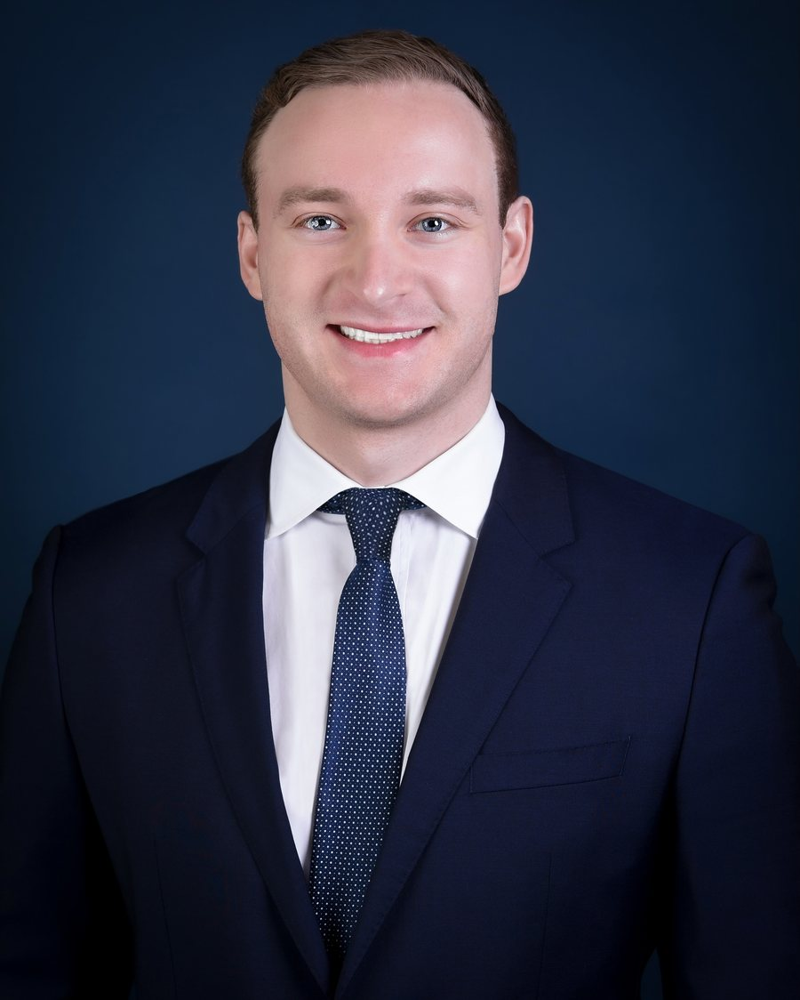

Orthopaedic surgery · Orlando Health
Griffin Rechter, MD
Fourth-year orthopaedic surgery resident, headed into orthopaedic trauma.

About me
A little background.
I grew up in Houston. I graduated magna cum laude from San Diego State University and got my MD from Texas Christian University, graduating with honors.
I'm now a fourth-year orthopaedic surgery resident at Orlando Health Jewett Orthopaedic Institute, a Level I trauma center. Most of my research is in orthopaedic trauma — fractures around implants, femoral neck fractures in young adults, and how implants behave in bone.
Next is an orthopaedic trauma fellowship, then practice as a trauma surgeon. I'm open on geography.
Outside the hospital I play guitar, train in mixed martial arts and boxing, surf, ski and snowboard, and speak conversational Spanish.
Training
Education and appointments
- 2023 –Orthopaedic surgery residencyOrlando Health Jewett Orthopaedic Institute · Orlando Regional Medical Center
- 2023Doctor of MedicineAnne Burnett Marion School of Medicine at Texas Christian University · inaugural class
- 2019BA/BS, Biology, Chemistry and PsychologySan Diego State University · magna cum laude
Roles
- Resident member, Online Discussion Forum Committee, Orthopaedic Trauma Association2026 – 2028
- Organizer, Orthopaedic Trauma Journal Club, Orlando Regional Medical Center2026 –
- Member, Pelvic Fracture Hospital Consensus Committee, Orlando Regional Medical Center2025 –
- Founder and president, Orthopaedic Surgery Interest Group, TCU School of Medicine2019 – 2023
Awards
- Orlando Health Research Award2025 · 2026
- First-place podium presentation, JPS Research & Quality Symposium2021
- Texas Cares Patient Safety Award2021
- Phi Beta KappaSan Diego State University
Grant funding
- Foundation of Orthopaedic Trauma — Three-Dimensional Gait Analysis & Functional Outcomes After Femoral Neck Fractures in a Young PopulationPIs: Michael Beltran, MD · Cory A. Collinge, MD
Memberships
- Orthopaedic Trauma Association (OTA)
- American Academy of Orthopaedic Surgeons (AAOS)
Research
Projects, publications and presentations.
I have published across several areas of orthopaedics, from basic science and general orthopaedics to fracture care, with a particular interest in fracture healing, femoral neck fractures in young adults, and the care of the orthopaedic trauma patient. Each project below links to the published abstracts and presentations that came from it.
All work
Publications and presentations by type.
Peer-reviewed titles open the published abstract. Author lists are as they appear on the published work. A full CV is available for download.
Contact
Get in touch.
The best way to reach me is by email.
griffinrechtermd@gmail.comA copy of my CV is available here.